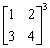
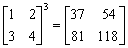
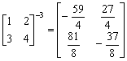

二階矩陣整數冪(I)
程式編寫日期: 2007年2月19日
程式可以計算一個2×2正整數矩陣的正整數冪及其逆矩陣(負整數冪)。 另外若果輸入數據為整數時，逆矩陣(負整數冪)答案會以分數形式表示，建議將計數機預先設定為假分數形式表示(按六次 Mode，再按 2 EXE )。
程式需要在 REG Quad 模式下執行，因此在輸入程式前請先按 Mode Mode 2 → 3 進入REG Quad模式。
注意: 藍色的英文字為統計模式中的變數(Σx3 按 Shift 1 → → 1，Σy 按 Shift 1 → 2，Σxy 按 Shift 1 → 3)，而3√是按shift x3，10x是按shift log。
程式 (142 bytes)
Stat clear: ?→M: 3√(M - 1 DT: ?→M: 1 , M DT:
?→M: 0 , M - Σy DT: ?→Y: 1→A: 0→B: 0→C: 1→D:
?→M: Lbl 0: Σx3A + ΣxyC→X: ΣyA + YC→C: X→A:
Σx3B + ΣxyD→X: ΣyB + YD→D: X→B:
M - 1→M => Goto 0: A◢ B◢ C◢ D◢ AD - BC→X:
D┘X◢ -B┘X◢ -C┘X◢ A┘X
註: 程式使用重複計算方法，所以冪數越大，計算時間越長。
例題: 計算以下矩陣及其逆矩陣:

按 Prog 1 再按 1 EXE 2 EXE 3 EXE 4 EXE 3 EXE (顯示37)
EXE (顯示54) EXE (顯示81) EXE (顯示118) EXE (顯示 -59/4)
EXE (顯示 27/4) EXE (顯示 81/8) EXE (顯示 -37/8)
所以

